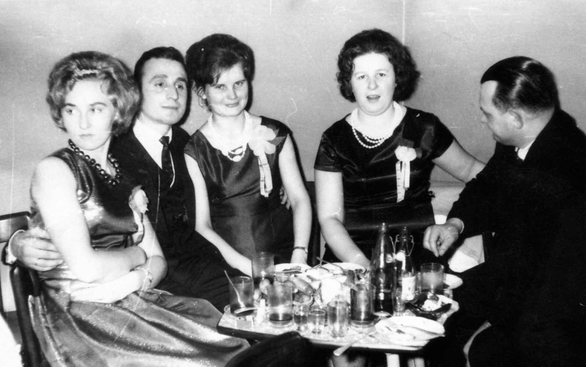

ire
Ire works at the intersection of writing, design and organizing. With a background in sculpture and art history, they try to filter each task and job through a million questions. This often means their work is confusing, illegible or off the grid. They struggle with visibility in the arts but remain supported by their chosen family. Currently they’re thinking about how to bring a sense of a political home into their labor. [email] ire3030@icloud.com
